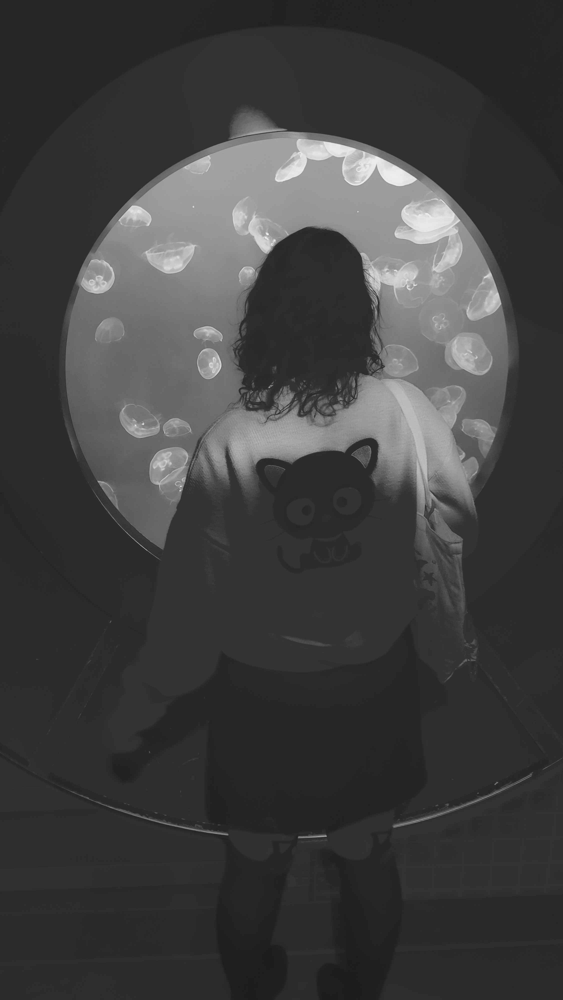

About Me
Zoe is a senior student at Mahwah High School
who aspires to pursue a marine biology degree at Montclair State University or Roger Williams
University. Her passion for aquatic invertebrates has driven her to combine her love of biology
and art. She is currently enrolled in Advanced Placement Art and Biology, in which she is
strengthening her scientific and creative abilities. Additionally, as an officer in her school
orchestra, she has developed strong leadership capability, collaborating with peers and taking
on responsibilities that showcase her organizational skills. Zoe aims to use her academic
background and artistic talents to document and illustrate the creatures of the sea, contributing
to the scientific community and cultivating a better environment.